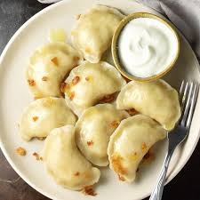

Home Page
Pierogi

Description
This pierogi recipe for Polish dumplings has been a family favorite from generation to generation. We traditionally make these for Christmas, but they can be made for any special event. There's some work involved, but the outcome is rewarding! You can pan-fry the boiled pierogies in butter for a crispy finish.
Ingredients
Saurekraut Filling:
- 2 tablespoons butter
- ⅓ cup chopped onion
- 1 ½ cups sauerkraut, drained and minced
- salt and pepper to taste
Potato Filling:
- 3 tablespoons butter
- ⅓ cup chopped onion
- 2 cups cold mashed potatoes
- 1 teaspoon salt
- 1 teaspoon white pepper
Dough:
- 1 (8 ounce) container sour cream
- 3 large eggs
- 3 cups all-purpose flour
- 1 tablespoon baking powder
- ¼ teaspoon salt